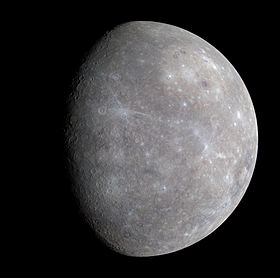
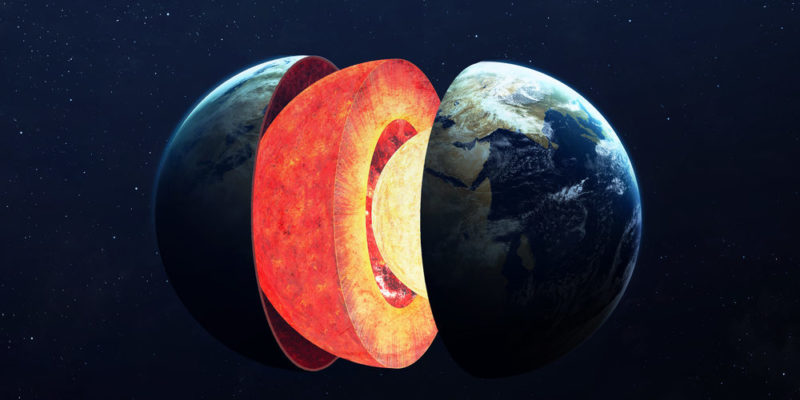
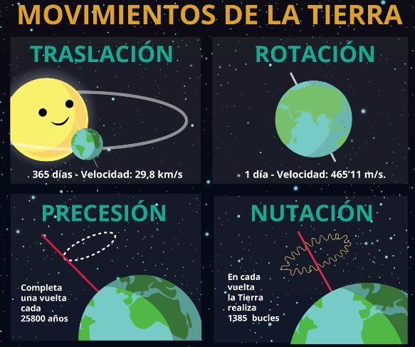

El sistema solar es el sistema planetario que liga gravitacionalmente a un conjunto de objetos astronómicos que giran directa o indirectamente en una órbita alrededor de una única estrella conocida con el nombre de Sol. La estrella concentra el 99,86 % de la masa del sistema solar, y la mayor parte de la masa restante se concentra en ocho planetas cuyas órbitas son prácticamente circulares y transitan dentro de un disco casi llano llamado plano eclíptico
Los cuatro planetas más cercanos, considerablemente más pequeños,Mercurio, Venus, Tierra y Marte , también conocidos como los planetas terrestres, están compuestos principalmente por roca y metal. Mientras que los cuatro más alejados, denominados gigantes gaseosos o «planetas jovianos», más masivos que los terrestres, están compuestos de hielo y gases. Los dos más grandes, Júpiter y Saturno, están compuestos principalmente de helio e hidrógeno. Urano y Neptuno, denominados gigantes helados, están formados mayoritariamente por agua congelada, amoniaco y metano.
En esta oportunidad se describirán los planetas conocidos como terrestres, es decir, los cuatro primeros:
Mercurio
Mercurio es el planeta del sistema solar más cercano al Sol y el más pequeño. Forma parte de los denominados planetas interiores y carece de satélites naturales al igual que Venus. Se conocía muy poco sobre su superficie hasta que fue enviada la sonda planetaria Mariner 10 y se hicieron observaciones con radar y radiotelescopios. Posteriormente fue estudiado por la sonda MESSENGER de la NASA y actualmente la astronave de la Agencia Europea del Espacio (ESA) denominada BepiColombo, lanzada en octubre de 2018, se halla en vuelo rumbo a Mercurio a donde llegará en 2025 y se espera que aporte nuevos conocimientos sobre el origen y composición del planeta, así como de su geología y campo magnético.
Antiguamente se pensaba que Mercurio siempre presentaba la misma cara al Sol (rotación capturada), situación similar al caso de la Luna con la Tierra; es decir, que su periodo de rotación era igual a su periodo de traslación, ambos de 88 días. Sin embargo, en 1965 se mandaron impulsos de radar hacia Mercurio, con lo cual quedó definitivamente demostrado que su periodo de rotación era de 58,7 días, lo cual es ⅔ de su periodo de traslación. Esto no es coincidencia, y es una situación denominada resonancia orbital.
Al ser un planeta cuya órbita es inferior a la de la Tierra, lo observamos pasar periódicamente delante del Sol, fenómeno que se denomina tránsito astronómico. Observaciones de su órbita a través de muchos años demostraron que el perihelio gira 43" de arco más por siglo de lo predicho por la mecánica clásica de Newton. Esta discrepancia llevó a un astrónomo francés, Urbain Le Verrier, a pensar que existía un planeta aún más cerca del Sol, al cual llamaron Vulcano, que perturbaba la órbita de Mercurio. Ahora se sabe que Vulcano no existe; la explicación correcta del comportamiento del perihelio de Mercurio se encuentra en la teoría general de la relatividad de Einstein.

Estructura Interna
Mercurio es uno de los cuatro planetas rocosos o sólidos; es decir, tiene un cuerpo rocoso, como la Tierra. Este planeta es el más pequeño de los cuatro, con un diámetro de 4879 km en el ecuador. Mercurio está formado aproximadamente por un 70 % de elementos metálicos y un 30 % de silicatos. La densidad de este planeta es la segunda más grande de todo el sistema solar, siendo su valor de 5430 kg/m3, solo un poco menor que la densidad de la Tierra. La densidad de Mercurio se puede usar para deducir los detalles de su estructura interna. Mientras la alta densidad de la Tierra se explica considerablemente por la compresión gravitacional, particularmente en el núcleo, Mercurio es mucho más pequeño y sus regiones interiores no están tan comprimidas. Por tanto, para explicar esta gran densidad, el núcleo debe ocupar gran parte del planeta y además ser rico en hierro, material con una alta densidad. Los geólogos estiman que el núcleo de Mercurio ocupa un 42 % de su volumen total (el núcleo de la Tierra apenas ocupa un 17 %). Este núcleo estaría parcialmente fundido, lo que explicaría el campo magnético del planeta.
Rodeando el núcleo existe un manto de unos 600 km de grosor. La creencia generalizada entre los expertos es que en los principios de Mercurio un cuerpo de varios kilómetros de diámetro (un planetesimal) impactó contra él deshaciendo la mayor parte del manto original, dando como resultado un manto relativamente delgado comparado con el gran núcleo.
La corteza mercuriana mide en torno a los 100-200 km de espesor. Un hecho distintivo de la corteza de Mercurio son las visibles y numerosas líneas escarpadas o escarpes que se extienden varios miles de kilómetros a lo largo del planeta. Presumiblemente se formaron cuando el núcleo y el manto se enfriaron y contrajeron al tiempo que la corteza se estaba solidificando
El Planeta Tierra
El planeta Tierra se caracteriza por ser el más denso de todo el Sistema Solar, por poseer el campo magnético más intenso y la gravedad superficial más alta de los planetas rocosos, pues tiene la rotación con velocidad más alta. El planeta Tierra no posee anillos.
Descipción
El planeta Tierra es el tercero que orbita alrededor del Sol (estrella de tipo G2V, quien se encuentra en su juventud de acuerdo con la evolución estelar), es un planeta terrestre metálico, clasificado en esta categoría junto con Mercurio, Venus y Marte debido a la composición de sus núcleos. El planeta Tierra se caracteriza por ser el más denso de todo el Sistema Solar, por poseer el campo magnético más intenso y la gravedad superficial más alta de los planetas rocosos, pues tiene la rotación con velocidad más alta. El planeta Tierra no posee anillos. Posee un satélite natural llamado “Selene” o conocida más popularmente como Luna, orbita a tan solo 384.400 km de distancia de la superficie, es el cuarto satélite natural más grande del Sistema Solar. Este contribuye a la estabilización de la inclinación de la Tierra, así como cambios de las mareas.
La Tierra, así como la mayoría de los planetas tiene una forma cuasiesférica, que a causa de la rotación presenta un alargamiento en la línea ecuatorial y un achatamiento en sus polos. A partir de su forma, se ha desarrollado un sistema de líneas y espacios imaginarios, que junto con la cartografía y las proyecciones han construido mapas que han ubicado espacial y temporalmente al ser humano. De este sistema destacan la longitud y la latitud, es decir los meridianos y paralelos.

Movimientos Planetarios
Rotación
Es un movimiento que efectúa la Tierra girando sobre el eje terrestre, que corta a la superficie en dos puntos llamados polos. Este giro es de oeste a este, o sea que para un observador situado en el espacio sobre el polo norte terrestre, este movimiento es levógiro (contrario al de las manecillas del reloj). Una vuelta completa, tomando como referencia a las estrellas, dura 23 horas con 56 minutos 4,1 segundos y se denomina día sidéreo. Si tomamos como referencia al Sol, el mismo meridiano pasa frente a nuestra estrella cada 24 horas, llamado día solar. Los aproximadamente 3 minutos y 56 segundos de diferencia se deben a que en ese plazo de tiempo la Tierra ha avanzado en su órbita y debe girar algo más que un día sideral para completar un día solar.
Traslación
Es el movimiento por el cual el planeta Tierra gira en una órbita elíptica alrededor del Sol en 365 días y algo menos de 6 horas. Para un observador situado en el espacio sobre el polo norte terrestre, este movimiento también es levógiro (contrario al de las manecillas del reloj), y lógicamente, visto desde polo sur terrestre, este movimiento es dextrógiro (como el de las manecillas del reloj). Como el calendario registra 365 días enteros, el comienzo de cada año se va adelantando, lo que se compensa aproximadamente (ya que no tiene en cuenta la precesión equinoccial. Ver más adelante) haciendo que uno de cada algo más de cuatro años, al que se denomina año bisiesto, tenga 366 días. La causa del movimiento de traslación es la acción de la gravedad y origina una serie de cambios que, al igual que el día, permiten la medición del tiempo. Tomando como referencia el Sol, resulta lo que se denomina año tropical, lapso necesario para que se repitan las estaciones del año. Dura 365 días, 5 horas, 48 minutos y 45 segundos. El movimiento que describe es una trayectoria elíptica de 930 millones de kilómetros, a una distancia media del Sol de prácticamente 150 millones de kilómetros, 1 ua (unidad astronómica: 149 597 871 km) u 8,317 minutos luz. De esto se deduce que la Tierra se desplaza por su órbita a una velocidad media de 106 200 km/h (29,5 km/s).
Precesión
La precesión de los equinoccios (el cambio lento y gradual en la orientación del eje de rotación de la Tierra) se debe al movimiento de precesión de la Tierra causado por el momento de fuerza ejercido por el sistema Tierra-Sol en función de la inclinación del eje de rotación terrestre con respecto al plano de la órbita terrestre (alrededor de 23°43' actualmente). Este movimiento se efectúa por completo cada 25 776 años (por lo que aproximadamente cada 130 siglos se invertirían las estaciones, pero la diferencia entre el año sidéreo y el año trópico es incorporada y corregida por el calendario gregoriano) y un observador en el espacio, situado sobre el polo norte, lo vería como un giro dextrógiro (en el mismo sentido del de las agujas del reloj).
La inclinación del eje terrestre varía de 23° a 27°, ya que depende (entre otras causas) de los movimientos telúricos. En febrero del 2010, se registró una variación del eje terrestre de 8 centímetros aproximadamente, por causa del terremoto de 8,8° Richter que afectó a Chile. En tanto que el maremoto y consecuente tsunami que azotó al sudeste asiático en el año 2004, desplazó 17,8 centímetros al eje terrestre.
Nutación
La precesión es aún más compleja si consideramos un cuarto movimiento: la nutación. Esto sucede con cualquier cuerpo simétrico o esferoide girando sobre su eje; un trompo (peonza) es un buen ejemplo, pues cuando cae comienza la precesión. Como consecuencia del movimiento de caída, la púa del trompo se apoya en el suelo con más fuerza, de modo que aumenta la fuerza de reacción vertical, que finalmente llegará a ser mayor que el peso. Cuando esto sucede, el centro de masa del trompo comienza a acelerar hacia arriba. El proceso se repite, y el movimiento se compone de una precesión acompañada de una oscilación del eje de rotación hacia abajo y hacia arriba, que recibe el nombre de nutación.
Para el caso de la Tierra, la nutación es la oscilación periódica del polo de la Tierra alrededor de su posición media en la esfera celeste, debido a las fuerzas externas de atracción gravitatoria entre la Luna y el Sol con la Tierra. Esta oscilación es similar al movimiento de una peonza (trompo) cuando pierde fuerza y está a punto de caerse

Además de la rotación, la traslación, la nutación,y el movimiento de precesión de los equinoccios. La tierra tiene otro movimiento: el bamboleo de Chandler. Debido a que nuestro planeta no es totalmente redondo y que en algunos lugares la masa terrestre se acumula más que en otros; la gravedad cambia.